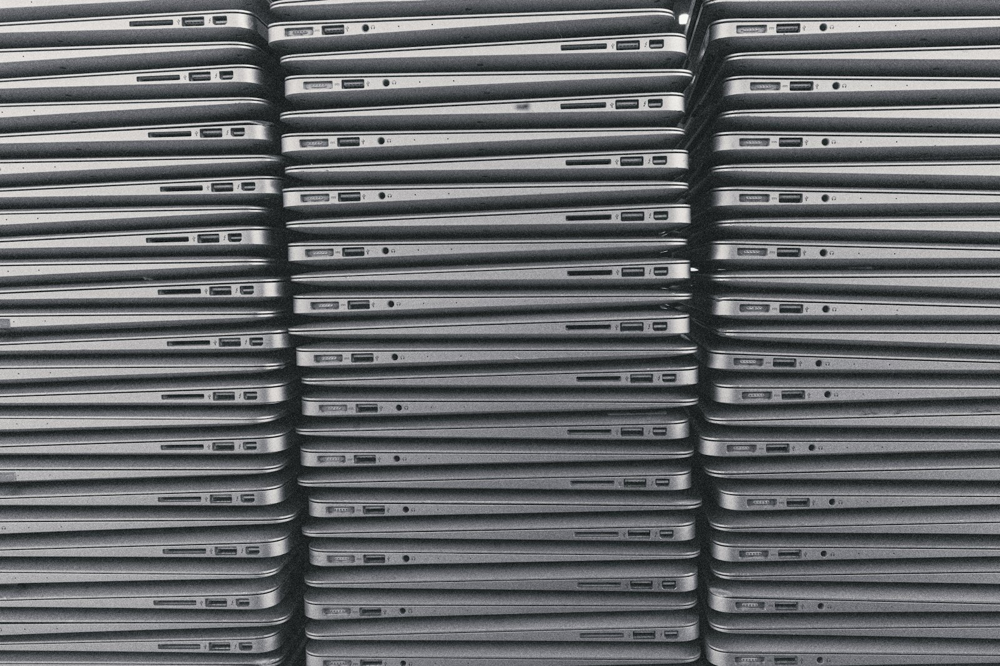

Votre parc renouvelé est une ressource, pas un déchet.
Un renouvellement de parc, ce sont souvent des dizaines de postes qui partent le même jour. La plupart fonctionnent encore : ils ont simplement fini leur cycle chez vous.
Les mettre à la benne, c'est jeter des machines qui peuvent servir plusieurs années de plus dans une école, une association ou un foyer de la vallée. C'est aussi renoncer à la valeur qu'il leur reste, et faire fabriquer ailleurs ce qui existe déjà ici.
Réemploi 74 vient chercher votre matériel gratuitement, en Savoie et en Haute-Savoie, à partir de 3 équipements. Nous effaçons les données disque par disque, avec un certificat. Nous réparons et remettons en service localement. Vous choisissez : le don solidaire, ou une offre de rachat envoyée sous 48 h ouvrées et payée par virement. Ce qui ne peut pas être réparé est démonté pour pièces, puis remis à un éco-organisme agréé. Nous ne sommes pas un service d'enlèvement de déchets : le matériel hors service n'est accepté qu'en complément d'un lot fonctionnel.

Sept garanties, écrites dans le devis
Inventaire par numéro de série
Chaque équipement est identifié à l'enlèvement et vous recevez la liste complète. Elle vous sert pour votre sortie d'immobilisations ou d'inventaire.
Certificat d'effacement par disque
Effacement conforme NIST 800-88 (Purge quand le matériel le permet, Clear sinon). Chaque certificat indique le numéro de série, la méthode, l'outil, la date, l'opérateur et l'empreinte de vérification.
Bordereau d'enlèvement signé
Au moment du chargement, nous signons ensemble le bordereau qui liste ce qui part. C'est votre preuve de traçabilité, le jour même.
Attestation de cession
Pour le don comme pour le rachat, vous recevez une attestation de cession et un bordereau de traçabilité. Une entreprise commerciale ne peut pas délivrer de reçu fiscal ; reçu fiscal possible via une association partenaire d'intérêt général, nous consulter.
Créneau sur rendez-vous
Enlèvement dans les 10 jours suivant votre acceptation, à l'heure convenue, avec un interlocuteur identifié de votre côté pour signer le bordereau.
Devis pour les lots
Au-delà de quelques postes, vous recevez un devis écrit qui précise le périmètre, la répartition entre don et rachat, et les délais. Le virement de rachat intervient sous 7 jours après diagnostic à l'atelier.
Attestation pour le matériel non réutilisable
Pour ce qui ne peut pas être remis en service, une attestation de démontage ou de remise à un éco-organisme agréé. Ces documents alimentent votre registre de traitement RGPD.
Ce que vaut votre parc
Ordre de grandeur, par appareil fonctionnel : portable de moins de 5 ans 40 à 150 €, tour 20 à 80 €, écran 5 à 30 €, smartphone 20 à 120 €. En dessous de 30 € par appareil, nous proposons le don. Le hors service n'est pas racheté. Le devis précise la répartition ; le montant est confirmé après diagnostic, virement sous 7 jours.
Le jour de l'enlèvement
- Le matériel est regroupé dans un lieu accessible (rez-de-chaussée ou ascenseur) ; nous ne démontons pas d'installation fixe.
- Les postes sont sortis de votre outil de gestion de flotte, les verrous d'activation retirés, les comptes déconnectés ; un appareil resté verrouillé est traité comme hors service, sans rachat.
- Un interlocuteur identifié signe avec nous le bordereau qui liste chaque équipement.
- Câbles, chargeurs et accessoires partent avec le lot ; ils comptent dans l'offre.
Collectivités : le réemploi compte dans vos achats informatiques
L'article 58 de la loi AGEC impose aux acheteurs publics d'intégrer des biens issus du réemploi, de la réutilisation ou du recyclage dans leurs achats. Le décret 2024-134 du 21 février 2024, en vigueur depuis le 1er juillet 2024, fixe les seuils pour l'État, les collectivités territoriales et leurs groupements : pour la catégorie « matériel informatique et téléphonie », 20 % du montant annuel hors taxes de la dépense doit provenir du réemploi ou de la réutilisation, puis 25 % en 2027 et 30 % en 2030. Le matériel que nous remettons en service peut être comptabilisé dans la part réemploi de vos achats ; nous précisons l'origine du matériel sur la facture sur simple demande. Et si vous en cédez, vous savez qu'il reste sur le territoire. Décret n° 2024-134 (Légifrance)
Déclarer un lot
Déclarer un lot prend quelques minutes. Pas de compte à créer : un formulaire, un code de suivi. Nous avons besoin de quatre informations : la quantité par catégorie, l'état global, un fichier d'inventaire si vous en avez un, et quelques photos d'ensemble. Ensuite, vous recevez un devis sous 48 h ouvrées, avec la répartition proposée entre don et rachat.
Votre demande est enregistrée.
Un email de confirmation reprend ce code. Pas de compte, pas de mot de passe : ce code suffit pour suivre votre dossier et retrouver vos documents.
Site de démonstration : la demande est conservée dans ce navigateur pour tester le suivi, elle n'est pas transmise à l'atelier.
Aucune demande récente trouvée. Faire un don ou demander une offre.